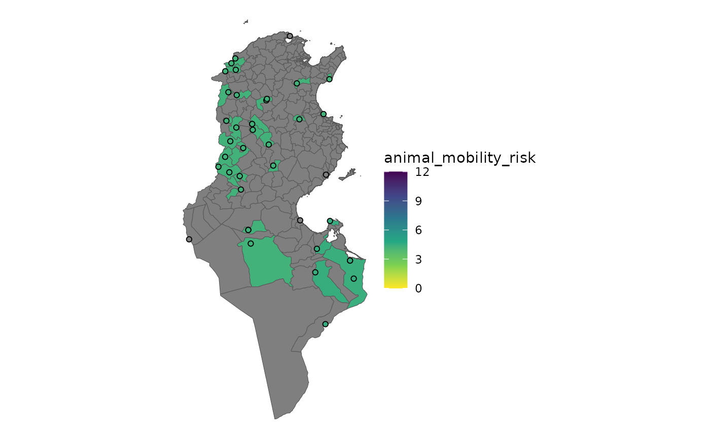

Calculate animal mobility risk
calc_animal_mobility_risk.RdCalculate the risk of introduction associated with legal international animal commerce entering epidemiological units.
Firstly, an aggregated emission risk is calculated for each destination point. This is because a destination point can have multiple sources (countries) giving emission risk.
Then, each destination point is allocated to an epidemiological unit. This is done by geospatial means, if an destination point is located inside an epidemiological unit's area it is thus allocated to it.
Finally, now that each destination point has an emission risk and has been paired with an epidemiological unit, the aggregated risk score for each epidemiological unit is calculated, giving the final risk of introduction by animal mobility for each epidemiological unit.
Arguments
- animal_mobility
animal moblity dataset as formatted and validated by
apply_mapping()andmapping_animal_mobility()- emission_risk
emission risk dataset from calc_emission_risk
- epi_units
epidemiological units dataset
- method
aggregation method for eu risk
Value
an sf dataset containing the risk of introduction for each of
the epidemiological units. The dataset has the following columns:
eu_id: epidemiological units identifiereu_name: epidemiological units nameanimal_mobility_risk: risk of introduction through animal mobilitygeometry: epidemiological units geometryMULTIPOLYGONS
This dataset also has a number of attributes that are used in other
functions from riskintroanalysis to make passing dataset metadata between
functions more user-friendly.
flows: ansfdataset containing the flow destination points, each point has an aggregated emission risk score that is weighted byquantity. It contains the following columns:d_name: destination nameemission_risk_weighted: weighted emission risk for that pointsource_label: HTLM label to be used in leaflet tooltips.geometry: destination point geometriesPOINTS
risk_col = "animal_mobility_risk"used byplot_risk()table_name = "table_name"used byplot_risk()scale = c(0, 12)used byplot_risk()andrescale_risk_scores()
Examples
library(riskintroanalysis)
library(riskintrodata)
animal_mobility_fp <- system.file(
package = "riskintrodata", "samples",
"tunisia", "animal_mobility", "ANIMAL_MOBILITY_raw.csv"
)
animal_mobility_raw <- readr::read_csv(animal_mobility_fp)
#> Rows: 112 Columns: 11
#> ── Column specification ────────────────────────────────────────────────────────
#> Delimiter: ","
#> chr (6): ORIGIN_NAME, ORIGIN_COUNTRY, ORIGIN_ISO3, DESTINATION_NAME, DESTINA...
#> dbl (5): ORIGIN_LONGITUDE_X, ORIGIN_LATITUDE_Y, DESTINATION_LONGITUDE_X, DES...
#>
#> ℹ Use `spec()` to retrieve the full column specification for this data.
#> ℹ Specify the column types or set `show_col_types = FALSE` to quiet this message.
animal_mobility <- apply_mapping(
animal_mobility_raw,
mapping = mapping_animal_mobility(
o_name = "ORIGIN_NAME",
o_lng = "ORIGIN_LONGITUDE_X",
o_lat = "ORIGIN_LATITUDE_Y",
d_name = "DESTINATION_NAME",
d_lng = "DESTINATION_LONGITUDE_X",
d_lat = "DESTINATION_LATITUDE_Y",
quantity = "HEADCOUNT"
)
)
#> ✔ All data in "animal_mobility" valided.
tunisia_raw <- sf::read_sf(system.file(
package = "riskintrodata",
"samples", "tunisia", "epi_units", "tunisia_adm2_raw.gpkg"
))
# Apply mapping to prepare colnames and validate dataset
tunisia <- apply_mapping(
tunisia_raw,
mapping = mapping_epi_units(
eu_name = "NAME_2",
geometry = "geom"
),
validate = TRUE
)
#> ✔ All data in "epi_units" valided.
algeria <- erf_row(
iso3 = "DZA",
country = "Algeria",
disease = "Avian infectious laryngotracheitis",
animal_category = "Domestic",
species = "Birds",
disease_notification = 0,
targeted_surveillance = 1,
general_surveillance = 0,
screening = 1,
precautions_at_the_borders = 1,
slaughter = 1,
selective_killing_and_disposal = 1,
zoning = 1,
official_vaccination = 1,
last_outbreak_end_date = as.Date("30/06/2023"),
commerce_illegal = 0L,
commerce_legal = 0L
)
#> ✔ All data in "emission_risk_factors" valided.
libya <- erf_row(
iso3 = "LBY",
country = "Libya",
disease = "Avian infectious laryngotracheitis",
animal_category = "Domestic",
species = "Birds",
disease_notification = TRUE,
targeted_surveillance = 1,
general_surveillance = 0,
screening = 1,
precautions_at_the_borders = 0,
slaughter = 1,
selective_killing_and_disposal = 1,
zoning = 1,
official_vaccination = 1,
last_outbreak_end_date = as.Date("30/06/2019"),
commerce_illegal = 0L,
commerce_legal = 1
)
#> ✔ All data in "emission_risk_factors" valided.
wahis_erf <- get_wahis_erf(
disease = "Avian infectious laryngotracheitis",
animal_category = "Domestic",
species = "Birds"
)
#> ✔ All data in "emission_risk_factors" valided.
#> ✔ WAHIS emission risk factors dataset has 62 entries for `disease = Avian infectious laryngotracheitis`, `species = Birds`, and `animal_category = Domestic`.
emission_risk_factors <- dplyr::bind_rows(
algeria,
libya,
wahis_erf
)
emission_risk_table <- calc_emission_risk(emission_risk_factors = emission_risk_factors)
ri_animal_mobility <- calc_animal_mobility_risk(
animal_mobility = animal_mobility,
emission_risk = emission_risk_table,
epi_units = tunisia,
method = "mean"
)
#> Warning: ! There are missing emission risk scores for the following countries:
#> • CAN missing for 1 animal mobility flows.
#> • PER missing for 1 animal mobility flows.
#> • SEN missing for 1 animal mobility flows.
#> Create new entries in the emission risk factor table using `erf_row()`
#> (`?riskintrodata::erf_row()`).
plot_risk(ri_animal_mobility)

extract_flow_risk(ri_animal_mobility)
#> Simple feature collection with 40 features and 3 fields
#> Geometry type: POINT
#> Dimension: XY
#> Bounding box: xmin: 7.66314 ymin: 31.97815 xmax: 11.3013 ymax: 37.26487
#> Geodetic CRS: WGS 84
#> # A tibble: 40 × 4
#> d_name geometry emission_risk_weighted source_label
#> <chr> <POINT [°]> <dbl> <chr>
#> 1 AEROPORT DJERBA (10.77592 33.87149) 4.5 <li>Mali (4.5/12)…
#> 2 AEROPORT SFAX (10.68861 34.72056) NA <li>Senegal (miss…
#> 3 POINT 4 (7.66314 33.53448) NA NA
#> 4 POINT 47 (10.67553 31.97815) 4.5 <li>Mali (4.5/12)…
#> 5 PORT DE BIZERTE (9.89047 37.26487) NA <li>Peru (missing…
#> 6 PORT DE GABES (10.11667 33.88333) NA <li>Canada (missi…
#> 7 BOUJABEUR (8.48696 35.70894) 4.25 <li>Algeria (4.2/…
#> 8 HALIMA (10.04415 36.39636) 4.25 <li>Algeria (4.2/…
#> 9 ES-SRAIA (8.46223 36.6186) 4.25 <li>Algeria (4.2/…
#> 10 KHMAIRIA (8.597894 36.76643) 4.25 <li>Algeria (4.2/…
#> # ℹ 30 more rows
attributes(ri_animal_mobility)
#> $names
#> [1] "eu_id" "eu_name" "animal_mobility_risk"
#> [4] "geometry"
#>
#> $row.names
#> [1] 1 2 3 4 5 6 7 8 9 10 11 12 13 14 15 16 17 18
#> [19] 19 20 21 22 23 24 25 26 27 28 29 30 31 32 33 34 35 36
#> [37] 37 38 39 40 41 42 43 44 45 46 47 48 49 50 51 52 53 54
#> [55] 55 56 57 58 59 60 61 62 63 64 65 66 67 68 69 70 71 72
#> [73] 73 74 75 76 77 78 79 80 81 82 83 84 85 86 87 88 89 90
#> [91] 91 92 93 94 95 96 97 98 99 100 101 102 103 104 105 106 107 108
#> [109] 109 110 111 112 113 114 115 116 117 118 119 120 121 122 123 124 125 126
#> [127] 127 128 129 130 131 132 133 134 135 136 137 138 139 140 141 142 143 144
#> [145] 145 146 147 148 149 150 151 152 153 154 155 156 157 158 159 160 161 162
#> [163] 163 164 165 166 167 168 169 170 171 172 173 174 175 176 177 178 179 180
#> [181] 181 182 183 184 185 186 187 188 189 190 191 192 193 194 195 196 197 198
#> [199] 199 200 201 202 203 204 205 206 207 208 209 210 211 212 213 214 215 216
#> [217] 217 218 219 220 221 222 223 224 225 226 227 228 229 230 231 232 233 234
#> [235] 235 236 237 238 239 240 241 242 243 244 245 246 247 248 249 250 251 252
#> [253] 253 254 255 256 257 258 259 260 261 262 263 264 265 266 267 268
#>
#> $class
#> [1] "sf" "tbl_df" "tbl" "data.frame"
#>
#> $sf_column
#> [1] "geometry"
#>
#> $agr
#> eu_id eu_name animal_mobility_risk
#> <NA> <NA> <NA>
#> Levels: constant aggregate identity
#>
#> $risk_col
#> [1] "animal_mobility_risk"
#>
#> $table_name
#> [1] "animal_mobility"
#>
#> $flows
#> Simple feature collection with 40 features and 3 fields
#> Geometry type: POINT
#> Dimension: XY
#> Bounding box: xmin: 7.66314 ymin: 31.97815 xmax: 11.3013 ymax: 37.26487
#> Geodetic CRS: WGS 84
#> # A tibble: 40 × 4
#> d_name geometry emission_risk_weighted source_label
#> <chr> <POINT [°]> <dbl> <chr>
#> 1 AEROPORT DJERBA (10.77592 33.87149) 4.5 <li>Mali (4.5/12)…
#> 2 AEROPORT SFAX (10.68861 34.72056) NA <li>Senegal (miss…
#> 3 POINT 4 (7.66314 33.53448) NA NA
#> 4 POINT 47 (10.67553 31.97815) 4.5 <li>Mali (4.5/12)…
#> 5 PORT DE BIZERTE (9.89047 37.26487) NA <li>Peru (missing…
#> 6 PORT DE GABES (10.11667 33.88333) NA <li>Canada (missi…
#> 7 BOUJABEUR (8.48696 35.70894) 4.25 <li>Algeria (4.2/…
#> 8 HALIMA (10.04415 36.39636) 4.25 <li>Algeria (4.2/…
#> 9 ES-SRAIA (8.46223 36.6186) 4.25 <li>Algeria (4.2/…
#> 10 KHMAIRIA (8.597894 36.76643) 4.25 <li>Algeria (4.2/…
#> # ℹ 30 more rows
#>
#> $scale
#> [1] 0 12
#>